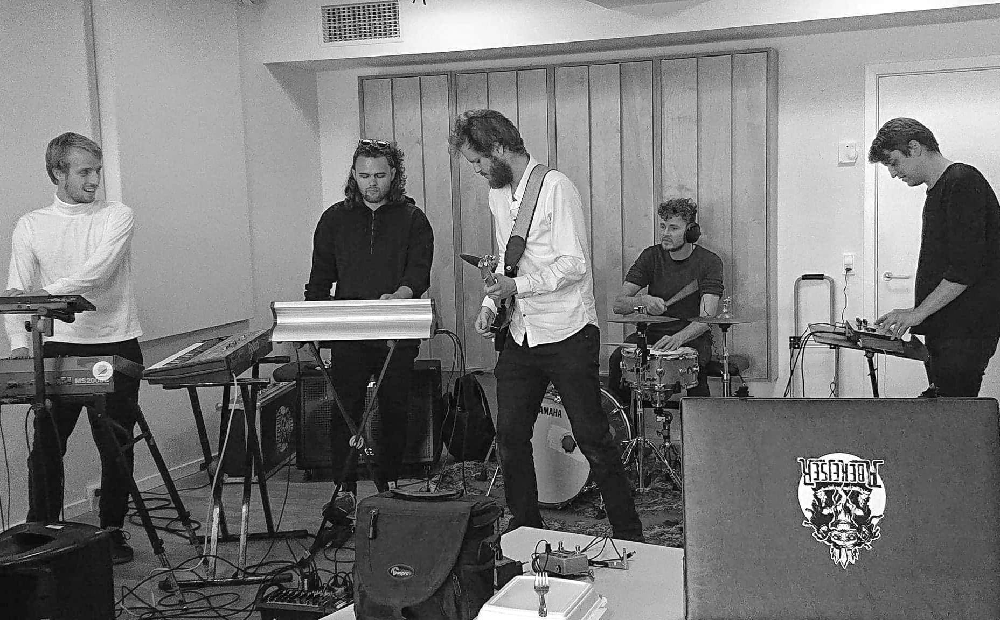
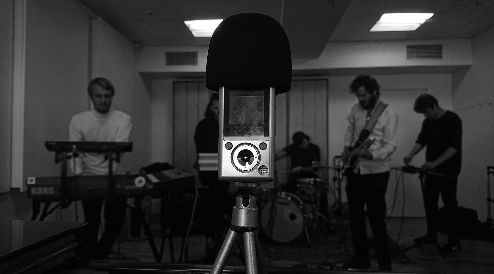
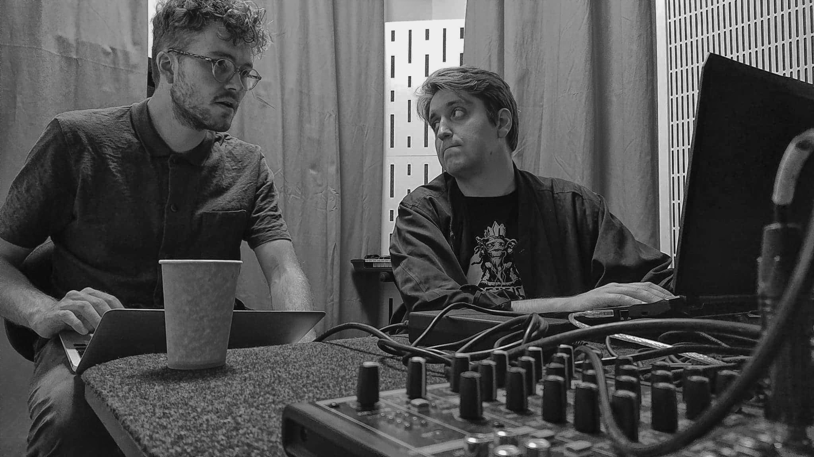
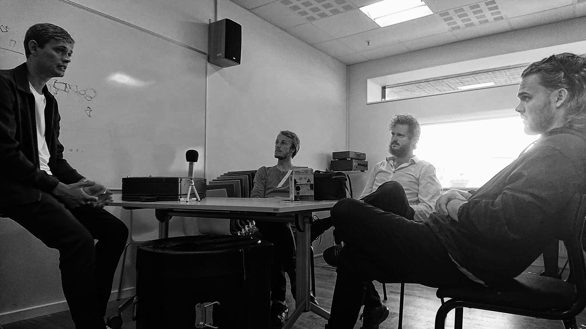

Vi besøger Abekejser en varm sensommerdag under festugen. Weekenden forinden har stået på koncert i København og næste weekend står den på tre spillejobs rundt i Danmark. Deres erfaring med at optræde live fejler derfor intet, men at lave en plade fra bunden, er noget nyt for Abekejser og mange af dets medlemmer.
Vi møder dem i et lånt øvelokale på Det Jyske Musikkonservatorie i Aarhus. Her bliver vi mødt af bandets 5 medlemmer - Jeppe, Jon, Adrian, Rasmus og Frederik, som er i gang med at afprøve forskellige sceneopstillinger til deres kommende koncerter. "Vi forsøger at fylde et hul ud i vores opstilling," forklarer Jon: "Der opstår et underligt tomt rum på midten af scenen."
Ligesom det tomme rum på scenen bliver fyldt, er Abekejsers musik blevet mere kompakt og produceret i lyden. De håber på at kunne interagere mere med hinanden og publikum i fremtiden.

Man mærker med det samme, den glæde og energi som bandet lægger i deres fælles projekt og drøm, og ikke mindst deres iver for at få en velproduceret første plade på gaden. Det er netop deres kommende plade den nye lyd og fremtiden for Abekejser vi er taget i øvelokalet for at snakke med bandet og dets 5 medlemmer om.
Den nye lyd
Abekejser er netop i gang med indspilningen til deres første plade. Lydmæssigt har bandet bevæget sig i en anden retning, indenfor jazzverdenen:
“Vi indspiller den lag på lag… Det er en anderledes arbejdsmetode inden for den jazzede verden” forklarer Jon.
Førhen har alle medlemmerne af Abekejser, været med til at indspille musik i et lydstudie på den helt traditionelle måde. Denne metode er de gået væk fra, både for at de kan spare penge, men også for at de kan gøre deres musik mere personlig. I dag optager de deres musik hver for sig, i deres eget hjem. På den måde sætter de selv deres eget præg på hver eneste tone. Lyden er også en anden, for der er forskel på at optage i et studie og sit eget hjem. Numrene er mindre improviserede, alt hvad der spilles er gennemarbejdet og komponeret til sidste detalje.
Hold musen over højtaleren og hør Abekejsers nye single

At skabe en plade
Det er Abekejser selv, som redigerer og manipulerer med hver enkelte lyd. Bandet synes det er vildt fedt, at det er dem selv, som har kontrollen over alt i indspilnings processen.
Der er ingen lydmænd, som sidder og styre knapperne, når Abekejser indspiller musik. Det er med til at gøre at de kan sætte deres helt eget præg på musikken og de bestemmer selv, hvordan alle lyde og overgange skal justeres. Abekejser kalder dem selv for ”kontrolfreaks” og derfor det fedeste for dem også at kunne kontrollere alt selv.

De største udfordringer som gruppen har mødt på deres vej, er mest praktiske i og med at bandmedlemmerne bor forskellige steder i Europa. Jon, Rasmus og Jeppe er bosat i Aarhus, Adrian i Berlin og Frederik i Helsinki. Det gør at bandet er nødt til at planlægge deres tid rigtig godt, når de er sammen til at øve. Det er også med til at gøre processen meget længere, end den ellers ville være, hvis de alle boede i samme by. Men det er ikke noget Abekejser, tager så tungt. Der er ting som kunne være meget værre.
Økonomisk er bandet glade for at de bor i Danmark og har mulighed for at søge legater og få tilskud til deres musik fra forskellige kulturfonde. Alle medlemmerne af Abekejser har førhen været med i en indspilningsproces, hvor der skulle søges om penge til projektet. Derfor ved de alle, hvordan det skal gøres. Derfor kan de i stedet lægge alt fokus på deres musik og produktionen af deres nye plade.
Fremtiden for Abekejser
Fremtidsplanerne er hele gruppen enige om; når pladen er i hus, vil de på Danmarksturne.
Jeppe udtaler:
“Der er mange steps før vi kan være sikre på at dét (pladeudgivelsen) kan komme til at ske, men hvis alt går efter planen, skal vi spille Danmarksturné næste år,”

De vil gerne have muligheden for at blive promoveret af både medier og bloggere, som skal være med til at skabe opmærksomhed omkring bandet. Det fedeste ville være at komme til at spille på Roskilde festival, og senere få mulighed for at komme til udlandet. Abekejser er enige om at de gerne vil spille koncerter i både Tyskland og England, og måske endda en tur til Asien.
Følg Abekejser på både Facebook og Instagram og hør deres musik på YouTube og Spotify